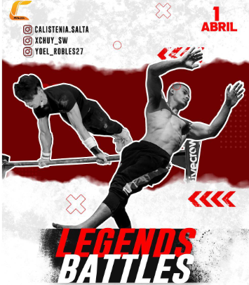

Instagram
Facebook
Como Llegar
Consultas
Precios y
Instagram
Facebook
Como Llegar
Consultas
Precios y Competencias

1ro de abril
Formato
- Freestyle:
Son combinaciones de elementos estaticos(consisten en mantener una determinada posición corporal durante un intervalo de tiempo.) y dinamicos (Los giros, los balanceos o los saltos entre barras son ejemplos de ejercicios dinámicos.). Contara con las categorias de: Principiante, Intermedio y Avanzado
- Powerfre:
Son unicamente trucos estaticos ya mencionados. Contara con las categorias: Intermedio y Avanzado
- Reps o Lifthing:
Consiste en realizar los ejercicios tradicionales de Calistenia con peso aumentado. Contara unicamente con la categoria Intermedio